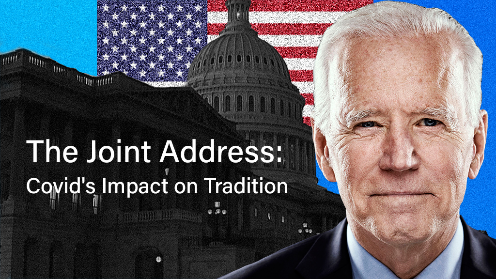
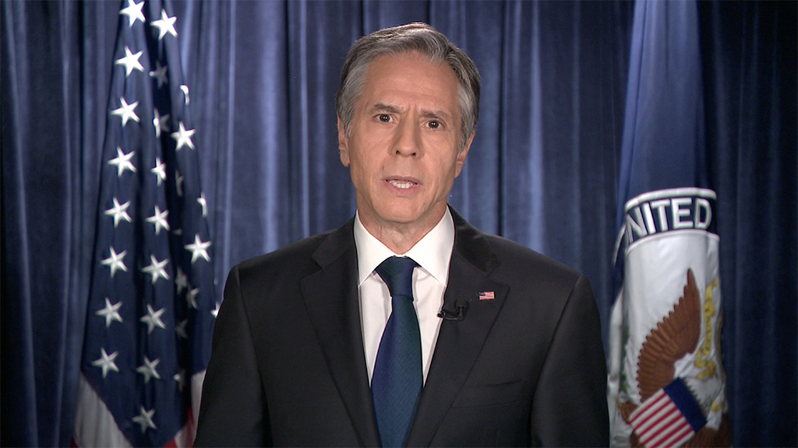
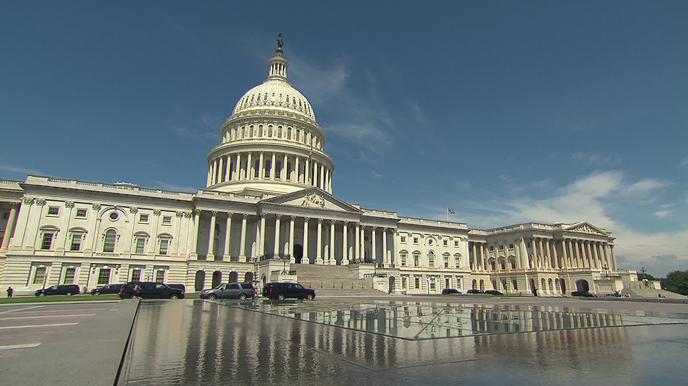

Fewer attendees
Usually, there are more than 1,000 people in the House chamber. A maximum of 200 people may attend Biden’s national address. Lawmakers who do not receive an invitation from congressional leadership will not be allowed inside the Capitol after 5 p.m. ET on the day of the address.Credit: CNN

Two cabinet members
Usually, 14 of the president’s 15 appointed cabinet leaders would assemble in the chamber. Only Secretary of State Antony Blinken and Secretary of Defense Gen. Lloyd Austin will be present this year.Credit: CNN

No “designated survivor”
Normally, a lone cabinet member remains in the care of the Secret Service outside of Washington D.C. to ensure the continuity of the government should someone attack the Capitol during the address where cabinet and congressional leaders would be present. With only two cabinet members in the chamber, that precaution is not necessary.Credit: CNN

Lone Justice
All nine U.S. Supreme Court justices attended the address in previous years. Only Chief Justice John Roberts received an invitation to Biden’s address, and he will attend.Credit: Pool

First Lady’s guest list
Jill Biden will be in the Chamber as will First Gentlemen Doug Emhoff. However, Biden will not have guests who represent the president’s initiatives in her viewing box. Last year, Melania Trump hosted 21 people. Jill Biden will hold a virtual reception for her guests before the address, and they will watch the president’s speech remotely.Credit: CNN/Pool

Different date
Historically, the president delivers a State of the Union speech in February. Biden’s first speech to a joint session is an “annual address,” and covid precautions led Speaker of the House Nancy Pelosi to delay inviting President Biden to address the body.Credit: CNN